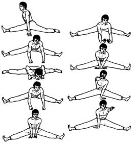

Соединитесь с землей

Исходное положение: Стоим, правая нога согнута в колене и выставлена вперед, левая – выпрямлена и отставлена назад. Корпус держим прямо. Отставляем назад левую ногу скользящим движением, одновременно распрямляем правую и садимся на «продольный шпагат». Для подстраховки опираемся сбоку руками об пол.
Стремимся максимально расслабить ноги и, постепенно раздвигая их, садимся ниже и ниже. Затем поворачиваемся на 90° влево и переходим на «поперечный шпагат», упираемся кулаками в пол на ширине плеч. Сгибая руки в локтях, ложимся на пол и стремимся коснуться пахом и грудью пола. Распрямляя руки, подаем таз назад. Повторяем упражнение 4 раза.
Переносим руки между ног и упираемся пальцами в пол сзади проекции центра тяжести. Освобождаем правую руку и вытягиваем ее вперед, затем меняем руки. Впоследствии, укрепив руки, опираемся об пол меньшим количеством пальцев.
Поворачиваемся на 90° влево и переходим в «продольный шпагат» (левая нога спереди). Затем поворачиваемся на 90° вправо в «поперечный шпагат», наклоняясь вперед, упираемся в пол тыльной стороной кистей (пальцы направлены вверх). Сгибая руки в локтях, прижимаемся к полу, распрямляя руки, подаем таз назад. Повторяем 4 раза.Переносим руки между ног и упираемся ладонями в пол сзади проекции центра тяжести. Лучезапястные суставы касаются друг друга, пальцы направлены вдоль ног. Освобождаем правую руку и вытягиваем ее вперед. Меняем положение рук.
Next up: Потягивание дракона